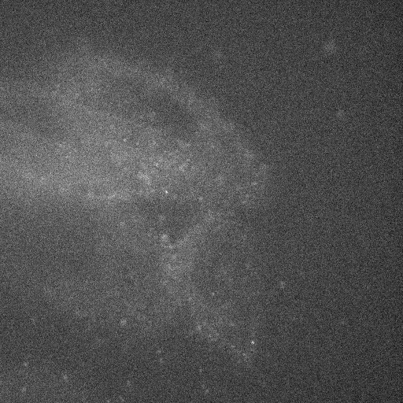
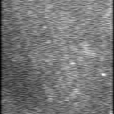

Microscopy Image Denoising: restauración de imágenes biomédicas
Proyecto exploratorio para reducir ruido en imágenes de microscopía mediante modelos de deep learning.
El trabajo combina generación de datos sintéticos con DeepTrack, autoencoders y experimentos inspirados
en pix2pix y CLIDiM para comparar imagen ruidosa contra imagen restaurada.

Enfoque
Construcción de datasets emparejados entre imágenes ruidosas y limpias.
Lectura y preparación de imágenes TIFF para entrenamiento y validación.
Entrenamiento de autoencoder convolucional con TensorFlow/Keras.
Exploración de métricas como PSNR, SSIM y pérdidas de variación total.
Investigación de arquitecturas pix2pix, U-Net y CLIDiM para denoising contrastivo.
Aprendizaje
El valor del proyecto está en conectar investigación de bioimaging con una implementación
reproducible: preparación de datos, experimentación en notebooks, comparación visual y selección
de métricas adecuadas para imágenes científicas.
Muestras visuales
Imagen de entrada con ruido.

Resultado denoised disponible en el material fuente.